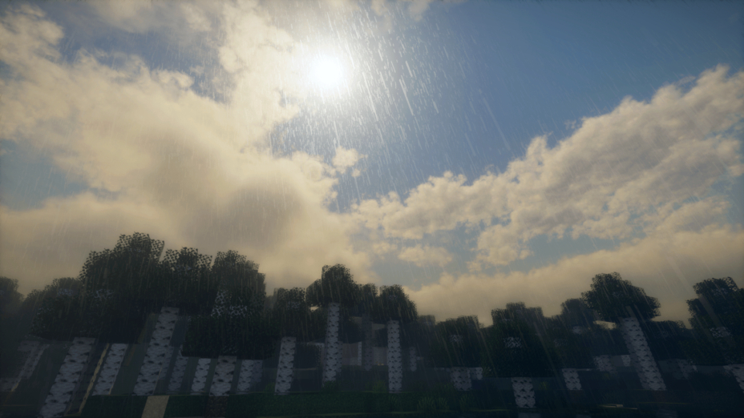
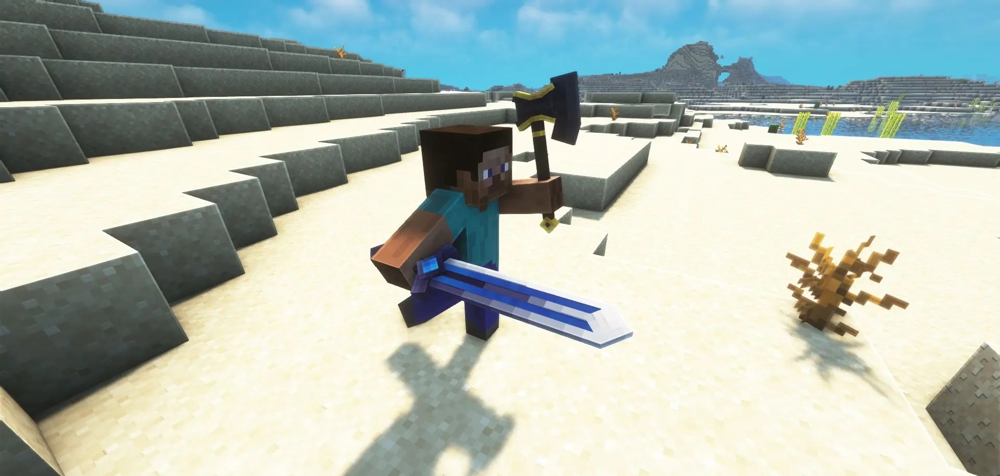
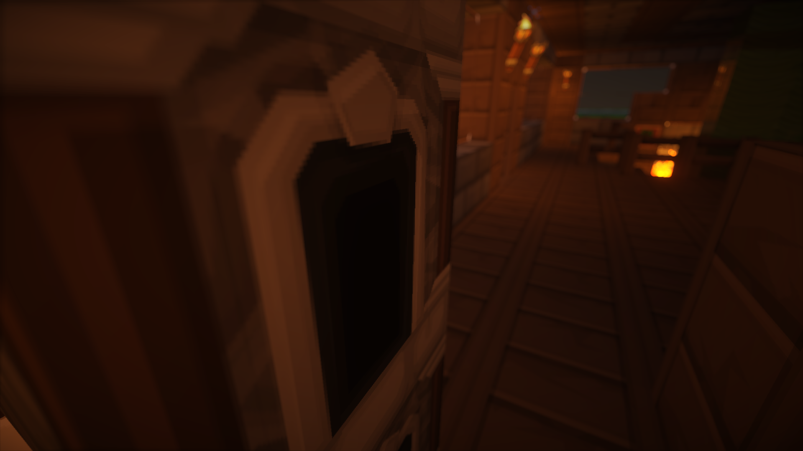

On this exhilarating day, we invite you to dive into the extraordinary
universe that has come to life over the past few months with the upcoming Minecraft server
named 'FightsCraft Of Legends.' At the heart of this adventure lies a consuming passion for
innovation and an unwavering determination to create an unparalleled gaming experience.
We present them to you right now.
—————
In the enchanting corners of "FightsCraft of Legends," each visual modification has been
meticulously chosen to evoke unique emotions and atmospheres. The visual quality brings subtle
nuances to the landscapes, revealing play of light that dances through the tree canopies and
reflects on winding rivers.
These nuances range from the striking realism of Ultra graphics quality to the more ethereal
atmospheres of Low and Medium versions, allowing players to customize their experience based on
their visual preferences.

The vibrant nuances of Extreme graphics embrace the world with intensely immersive light, while
the High version maintains a subtle balance between realism and game aesthetics. The Low and
Medium graphics versions offer a streamlined aesthetic, perfect for those who prefer
immersion while maintaining optimal performance.
These visual choices come together to create an ever-evolving canvas, reacting to day-night cycles
and weather conditions, ensuring a dynamic and captivating visual experience at every corner of the
"FightsCraft of Legends" world.
Dive into a captivating adventure where every move matters. On "FightsCraft of Legends," the
gameplay experience is defined by unique features, including the ability to dual-wield weapons in both
hands. This tactical freedom allows players to customize their combat style, whether wielding a sword
and shield in tandem or adopting a more aggressive approach with a weapon in each hand.

The combat system is designed to be not only strategic but also fluid, offering seamless combos that
reward mastery of movements. Players can discover special chains, unlock unique skills, and refine
their technique as they progress. Every choice has an impact; every move can be the start of an epic
combo, adding a dynamic and exhilarating dimension to each confrontation.
"FightsCraft of Legends" emphasizes freedom of choice in combat, encouraging players to experiment
and develop their own style, creating a personalized and unforgettable gaming experience.
The map of the "FightsCraft of Legends" server is a true work of art in constant evolution, casting its
charm beyond the visible horizons. The grand medieval cities, civilization's jewels, are not mere static
decorations but vibrant centers of dynamic activities. Each of these cities hosts a simulated economy
where players can trade, engage in local quests, and interact with NPCs full of personality.
The vast expanses that stretch between these urban strongholds paint a diverse canvas of nature,
offering adventures as rich as they are varied. From majestic snow-capped mountains to mystical
forests teeming with strange creatures, every corner of the map reveals unique landscapes and
mysteries to explore. These vast expanses are not just passageways but complete territories,
inviting players to discover hidden secrets, lost dungeons, and unsuspected treasures.

Navigating this expansive universe will require sharp survival skills, as the landscapes can be as
dangerous as they are beautiful. Players will need to venture off the beaten paths to uncover
secret locations, testing their ability to overcome the challenges of nature while exploring the
mysteries hidden in the corners of each region.
Committed to providing an inclusive experience, the "FightsCraft of Legends" server aims to make its
world open to all adventurers. The ongoing development of a dedicated launcher is geared towards
simplifying the connection process, providing a user-friendly interface that makes entering the server's
universe easy.
Whether you use a premium or cracked version of Minecraft, all players are welcome to join
"FightsCraft of Legends" and take part in this epic journey, eliminating any barriers to adventure.
Every suggestion, every shared experience, becomes a pillar upon which rests our tireless quest for
perfection.
—————
This is a brief summary of what we've been working on in recent months. More details will follow in the
coming months. Stay tuned, and make sure to join our Discord and follow for the latest updates and insights
in the days ahead.
-FightsCraft Of Legends Team.